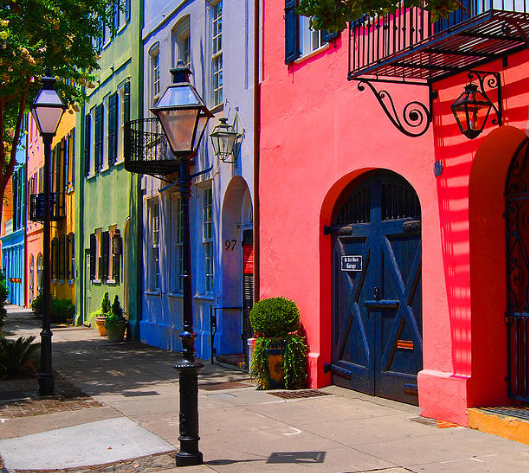

Charleston SC is full of brides to be and the top destinations on the East Coast—and it's not hard to see why. The Holy City offers a perfect mix of antebellum charm, Lowcountry flavors, walkable King Street boutiques, and warm Atlantic beaches all within thirty minutes of each other.
For the group that wants a high-energy, unforgettable night without fighting for space in a downtown club, Michael At Your Place is the go-to private entertainer for post bridal rehearsal parties across the Charleston area — from Folly Beach vacation rentals to Isle of Palms beach houses to private suites in downtown Charleston's French Quarter. The show comes directly to your rental or venue, giving you a fully personalized experience on your own schedule. It's consistently one of the most talked-about activities among brides celebrating their last fling before the ring in Charleston.
Candlefish, located on King Street near the Upper King design district, is one of Charleston's most beloved boutique experiences for post bridal rehearsal groups. Their private candle-making workshops are BYOB — meaning you can bring your rosé and spend two hours exploring a library of over 100 scents while pouring custom candles to take home. It's the kind of tactile, conversational activity that naturally sparks toasts and storytelling. Groups up to 20 can reserve the private event space. Prefer a fragrance twist? Tijon Fragrance Lab on middle King Street offers custom perfume blending with 300+ oils — a uniquely personal keepsake for the bride-to-be.
The iconic row of thirteen Georgian houses painted in candy pastels at 83–107 East Bay Street is ground zero for post bridal rehearsal photos in Charleston. From Rainbow Row, walk south along East Bay to Waterfront Park with its famous pineapple fountain — another must-photo stop — then continue to The Battery, a Civil War-era seawall lined by grand antebellum mansions draped in Spanish moss. End at White Point Gardens for a shaded picnic under ancient live oaks. This entire walk is less than a mile and totally free. Pro tip: go before 9am on a weekend morning for golden light and zero crowds — then reward the group with biscuits from Hogan's on East Bay.
Upper King Street between Spring Street and Calhoun Street is one of the most walkable shopping corridors in the South. Kick off at Kenny Flowers (345 King) for post bridal rehearsal dresses, swimwear, and their rooftop Cabana Club deck you can rent for the whole group — bottles of rosé included. Work your way south through Savannah Bee Co. for mead tastings, boutiques like Worthwhile, and straight into the historic French Quarter district. For a guided version with complimentary wine and boutique discounts at every stop, look into the King Street Shopping Tour starting at The Watch rooftop on Wentworth Street — a two-hour tasting and shopping experience that practically pays for itself.
The Lowcountry has three distinct beach personalities within 30 minutes of downtown. Isle of Palms (via the Connector off US-17) is the upscale resort vibe — Wild Dunes beach houses, calm Atlantic swells, and access to IOP's Front Beach with its strip of casual bars and taco joints. Folly Beach off Folly Road (SC-171) is funky, artsy, and fiercely local — check the Folly Beach calendar for weekend music festivals that often coincide with bach weekends. Sullivan's Island is the most laid-back of the three — no high-rises, no chain restaurants, just wide sandy shores and low-key beach bars near Station 22½. All three offer chair and umbrella rentals ideal for a full girls' day in the sun.
Just across the Arthur Ravenel Jr. Bridge in Mount Pleasant, Shem Creek is the Lowcountry's quintessential waterfront hangout. The boardwalk along Mill Street threads past working shrimp boats and a lineup of waterfront restaurants — Tavern & Table for pimento cheese and oysters Rockefeller, Red's Ice House for casual beers and sports TV on the dock, and The Rusty Rudder for frozen drinks with pelicans overhead. Pair this with a Palmetto Breeze sailing charter that departs from Shem Creek — a 2-hour sunset catamaran sail with BYOB is one of the most genuinely romantic low-key experiences in the area.
For the bride who loves Southern Gothic beauty, Magnolia Plantation & Gardens on Ashley River Road (SC-61) is unlike anything else in the Lowcountry. America's oldest public garden features cypress swamp canoe trails, an alligator observation area, peacocks, and explosions of azalea and wisteria color depending on the season. Just south, Middleton Place offers the oldest landscaped gardens in the United States along the same Ashley River corridor — perfect for a long, rambling afternoon. Both spots are 20 minutes from downtown via US-17 to SC-61 and make for stunning, relatively uncrowded photo backdrops for a post bridal rehearsal group.
Few American cities do ghost tours as authentically as Charleston. The peninsula is literally built on centuries of history — much of it dark — and the stories that surface on a good nighttime tour will have your group genuinely spooked. Old South Carriage Company on Anson Street offers evening ghost carriage rides through the Ansonborough and Harleston Village neighborhoods, narrated by costumed guides who weave documented history with chilling folklore. Bulldog Tours on North Market Street is another top pick for walking ghost tours through the old City Market area and Church Street corridor. Both are 90 minutes of entertainment requiring zero physical exertion — perfect for groups in heels.
Charleston's spa scene punches well above its weight for a city this size. The Spa at The Dewberry on Meeting Street adjacent to Marion Square is the most buzzed-about — a mid-century modern sanctuary with treatments inspired by Lowcountry botanicals like sweetgrass and sea salt. For a larger group buyout, The Spa at Charleston Place on Market Street has full-day packages that can accommodate multiple guests simultaneously. Woodhouse Day Spa on King Street is a franchise with a strong local reputation for consistency and booking availability. Any of these make an ideal morning-of-the-wedding-eve wind-down for the bride and her crew.
Michael At Your Place brings the show directly to your rental — Isle of Palms, Folly Beach, downtown Charleston, and beyond.
Book Now at MichaelAtYourPlace.comHiring a private chef to bring the Lowcountry boil, shrimp and grits, and cornbread directly to your Isle of Palms or Folly Beach rental is one of the fastest-growing post bridal rehearsal trends in the Charleston area. Services like Cozymeal Charleston private chefs match groups with local culinary talent who source from Half-Mile Farm, Ambrose Family Farm, and the Marion Square Farmers Market. This creates an intimate space for champagne toasts, party games, and real conversation that a loud restaurant simply can't offer — especially for groups of 8–15 staying in a Wild Dunes villa or downtown vacation home on Tradd Street or Broad Street.
Charleston's restaurant scene regularly ranks among the best in America — fueled by a James Beard Award-winning and nominated concentration unmatched by cities ten times its size. A guided food tour through the French Quarter, around Church Street past historic St. Philip's and St. Michael's churches, and through the City Market on Market Street hits classics like FIG (James Beard winner Sean Brock territory), Husk on Queen Street, Slightly North of Broad (SNOB) on East Bay, and Poogan's Porch in a Victorian townhouse on Queen Street. Tours through Culinary Tours of Charleston run 2.5 hours with 6–7 tastings — pack comfortable shoes.
Charleston Cocktail Co. sends a professional bartender directly to your vacation rental with everything needed to guide your group through a 90-minute cocktail class customized to the bride's favorite flavors. Groups can add a cocktail competition component — teams split up, mix their best creation, and the bride judges. It's the interactive, in-home alternative to bar-hopping that works especially well for post bridal rehearsal groups staying near Cannon Street, Spring Street, or the Cannonborough-Elliotborough neighborhood. Sipping a well-made Lowcountry Mule in your own rental beats fighting for the bartender's attention at a packed King Street bar.
Harbor Bar Pedal Tours departs from Adger's Wharf near the foot of Tradd Street along the Charleston Harbor waterfront, offering 360-degree views of Fort Sumter, the Arthur Ravenel Jr. Bridge, and the Ravenel Bridge pedestrian path across the Cooper River. The pedal boat fits 12 and is entirely BYOB — the resistance is adjustable so you can coast. For a larger group wanting a full party boat experience, the Charleston Tiki Hut — a 32-passenger solar-powered party boat — runs out of Ripley Light Marina on Lockwood Drive and delivers two hours of floating fun with a cooler, Bluetooth speakers, and floating platforms.
For the active bride tribe, the Intracoastal Waterway and the tidal creeks behind Isle of Palms and Kiawah Island offer some of the most scenic paddling in the Lowcountry. Tidal Wave Water Sports at Isle of Palms is a beloved local small business offering kayak and paddleboard rentals, parasailing, and Jet Ski tours from the IOP Marina on Palm Boulevard. They also run custom harbor charters for groups wanting a more relaxed boat trip without the party-boat energy. For a wellness angle, Serenity Tree Yoga offers private beach and park yoga sessions — a perfect detox-morning activity the day after a big night out.
Turn the city itself into your activity with a custom or guided scavenger hunt through downtown Charleston. Historic hunts wind through Church Street, the Heyward-Washington House on Church Street, the Old Exchange Building on East Bay, and the Provost Dungeon beneath it. Ghost-themed hunts focus on the Unitarian Church Graveyard on Archdale Street, St. Philip's Churchyard on Church Street, and documented paranormal sites in the Ansonborough neighborhood. Sites like Urban Adventure Quest offer self-guided app-based versions for groups that want to go at their own pace — great for post bridal rehearsal groups staying in the South of Broad or Radcliffeborough neighborhoods.
The Charleston City Market on Market Street stretching from Meeting to East Bay has been a community gathering point since 1804. Today it houses dozens of local artisans, with the most famous being the sweetgrass basket weavers — Gullah Geechee women who practice a West African tradition brought to the Lowcountry over 300 years ago. Watching a sweetgrass basket take shape is genuinely mesmerizing, and purchasing one supports a living cultural heritage. The market also sells Lowcountry palmetto rose vendors, sea glass jewelry, and food items from Charleston's artisan food scene. Pair the market visit with a walk down South Market Street into the Harleston Village for a quieter stretch of boutiques.
Planning Tips for Your Charleston Last Fling: Best weather runs March–May and September–November — spring means cooler temps and blooming gardens; fall means festivals and fewer tourists. Most downtown Charleston Airbnbs and vacation rentals are within walking distance of Upper King Street, the French Quarter, and the Charleston City Market. For beach stays, Isle of Palms rentals near Palm Boulevard work well for larger groups of 10–15. Rideshare (Uber/Lyft) from IOP to downtown runs about 25 minutes. See our live brunch show recommendation for a unique daytime option, or check Party Charleston for additional local event resources.